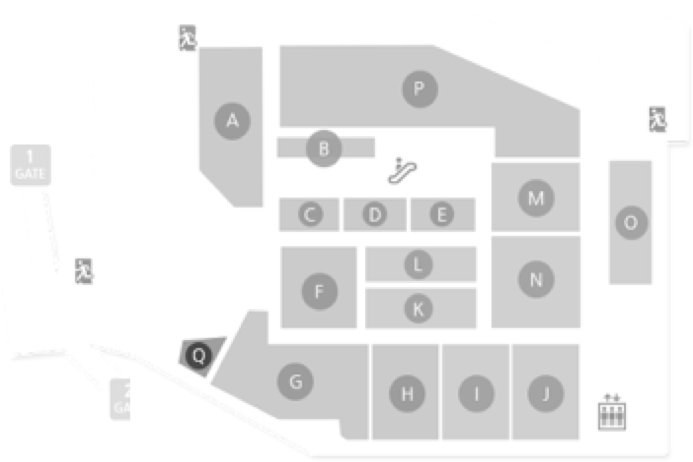

<div class="contents bottom-sticky" ref="contents">
  <div class="row complete">
    <i class="ico-complete"></i>
    <p class="tit" v-html="$t('sev.consult-complete-text')"></p>
    <p class="desc"><strong>{{bookInfo.FIELD_BOOK.ZONE_NAME}}</strong>에서 곧 뵙겠습니다.<br> 잠시만 기다려주세요.</p>
    <dl class="details-info">
      <dt>{{ $t('sev.consult-number') }}</dt>
      <dd>{{bookInfo.FIELD_BOOK.BOOK_CODE}}</dd>
      <dt>{{ $t('sev.waiting-number') }}</dt>
      <dd>{{bookInfo.WAITING_COUNT}}명</dd>
      <dt>{{ $t('sev.consult-location') }}</dt>
      <dd>{{bookInfo.FIELD_BOOK.ZONE_NAME}}</dd>
      <!-- 09.18 안내도 영역 수정 -->
<!--      <dd class="img-store">-->
<!--        <div class="inner">-->
<!--          -->
<!--          -->
<!--        </div>-->
<!--      </dd>-->
      <!--// 09.18 안내도 영역 수정 -->
    </dl>

    <ul class="texts-info">
      <li>{{ $t('sev.consult-complete-guide1') }}</li>
      <li>{{ $t('sev.consult-complete-guide2') }}</li>
    </ul>
  </div>

  <div class="btn-wrap sticky">
    <router-link to="/" class="btn-line big">{{ $t('comm.go-main') }}</router-link>
    <router-link to="/my/booking/list" class="btn-line big">{{ $t('sev.service-booking-list') }}</router-link>
  </div>
</div>
